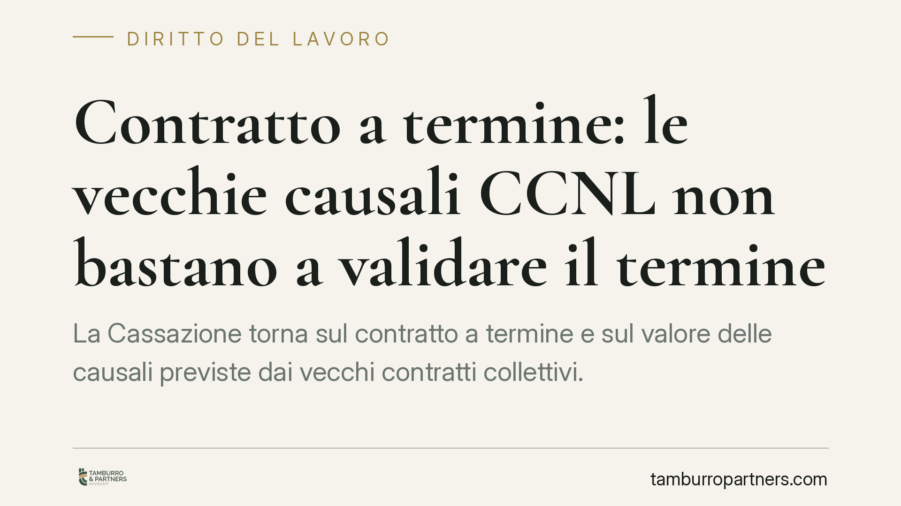

Contratto a termine: le vecchie causali CCNL non bastano a validare il termine
La Cassazione torna sul contratto a termine e sul valore delle causali previste dai vecchi contratti collettivi. Il principio: le clausole ereditate da normative superate non validano automaticamente il termine, che oggi si regge sul sistema di durate e limiti introdotto nel 2015 e corretto nel 2018. Un chiarimento rilevante per la gestione dei rapporti a tempo determinato in azienda.

Il caso e il principio
La questione riguarda la validità dei contratti a tempo determinato quando il datore di lavoro richiama, per giustificare il termine, causali contenute in contratti collettivi risalenti a un quadro normativo ormai superato.
La Corte di Cassazione, Sezione Lavoro, ha chiarito che quelle clausole non hanno più forza validante autonoma. Il contratto a termine, dopo la riforma del 2015, non si legittima invocando causali "di sistema" dei vecchi CCNL, ma va valutato alla luce della disciplina vigente: limiti di durata, tetti numerici e, oltre una certa soglia temporale, obbligo di causale tipizzata dalla legge.
*Nota di trasparenza: gli estremi puntuali della pronuncia (numero e anno) vanno verificati sulla fonte ufficiale prima di ogni utilizzo processuale. Il principio qui esposto riflette l'orientamento consolidato sulla successione delle normative in materia.*
Inquadramento normativo
Il riferimento è il Decreto Legislativo n. 81 del 2015 (cosiddetto Jobs Act sui rapporti di lavoro), che ha riscritto la disciplina del contratto a termine. Il suo tratto iniziale era la libertà di causale: entro il limite di durata, il datore poteva stipulare contratti a termine senza dover indicare una ragione giustificativa specifica ("acausalità").
Questo assetto è cambiato con il Decreto Legge n. 87 del 2018 (Decreto Dignità), convertito nella Legge n. 96 del 2018, che ha modificato l'art. 19 del D.Lgs. 81/2015. Da quel momento vale la regola oggi in vigore:
- entro 12 mesi il contratto a termine può essere stipulato senza causale;
- oltre i 12 mesi (e comunque entro il tetto ordinario di 24 mesi, comprensivo di proroghe e rinnovi tra le stesse parti) è obbligatoria una causale rientrante nelle ipotesi tipizzate dalla legge o individuate dalla contrattazione collettiva secondo i criteri di legge.
È qui il punto della Cassazione: le vecchie causali dei CCRL/CCNL, nate sotto normative precedenti, non colmano da sole l'obbligo introdotto dal 2018. La legittimità del termine si misura sulle regole attuali, non su clausole superate.
Implicazioni pratiche
Per le aziende. Non ci si può affidare a modelli contrattuali datati che richiamano causali "storiche" del contratto collettivo. Oltre i 12 mesi, la causale deve essere concreta, riconducibile alle ipotesi previste e documentabile. Un termine apposto in modo irregolare espone al rischio di conversione del rapporto a tempo indeterminato, con i relativi costi.
Per i lavoratori. Chi ha sottoscritto un contratto a termine oltre i 12 mesi privo di causale valida—o basato su una causale generica ereditata da vecchi CCNL—può avere elementi per contestare la legittimità del termine. La verifica va fatta sul contratto specifico e sui tempi complessivi del rapporto.
La distinzione tra soglia dei 12 mesi (obbligo di causale) e tetto dei 24 mesi (durata massima) resta il criterio da tenere sempre presente: sono due limiti diversi, spesso confusi.
Cosa fare in concreto
- Verificate la modulistica. Aggiornate i format dei contratti a termine eliminando i richiami a causali di CCNL non più coerenti con l'art. 19 D.Lgs. 81/2015 come modificato nel 2018.
- Mappate le durate. Ricostruite, per ciascun lavoratore, la somma di contratti, proroghe e rinnovi per capire se si supera la soglia dei 12 mesi e ci si avvicina al tetto dei 24.
- Motivate le causali oltre i 12 mesi. Indicate ragioni concrete, specifiche e documentabili, non formule di stile.
- Conservate la documentazione a supporto della causale (picchi produttivi, esigenze sostitutive, ecc.): in giudizio l'onere della prova grava sul datore.
- Chiedete una verifica preventiva dei contratti a rischio, prima che l'eventuale contestazione arrivi in sede giudiziale.
Disclaimer
Contributo informativo a cura di Tamburro & Partners - Avv. Giuseppe Tamburro. Non costituisce parere legale.
Ogni storia di lavoro ha i suoi tempi.
Se gestisci HR e vuoi un confronto su contenzioso, ispezioni o licenziamenti, scrivi allo studio. Ti rispondiamo entro un giorno lavorativo.